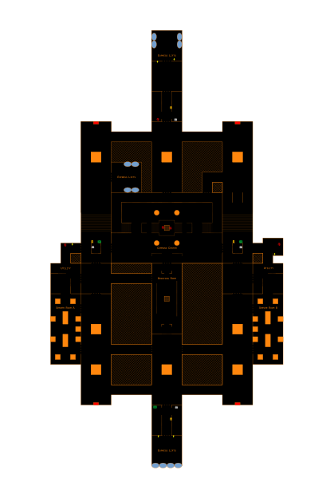
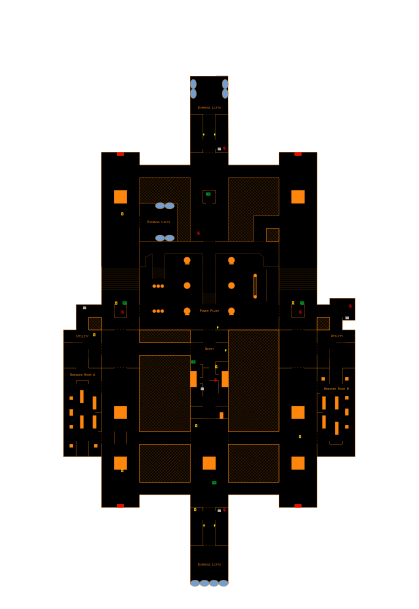

Megaship navigation
Clear schematics for complex interiors, routes, lift access, and key points of interest.
NavigationOperational resources for commanders
Built for Elite Dangerous players who want faster decisions, cleaner intel, and better coordination across stations, megaships, trade routes, and fleet ops.


Tool suite
Clear schematics for complex interiors, routes, lift access, and key points of interest.
NavigationTrack profitable runs, compare routes, and manage jump-to-jump logistics with confidence.
EconomyIdentify efficient pathways, dangerous systems, and useful intermediate stops across the bubble.
MappingKeep missions, schedules, and team objectives aligned from the cockpit to the station floor.
OpsWhy EPI
This website brings together operational resources, reference data, and practical mission aids into one command layer. It is designed to be useful while you play: quick, readable, and built for decisions under pressure.
Spatial schematics that support navigation and orientation inside large structures.
Set-up dashboards for commodity flow, skip-jumps, and route optimization.
Community-first